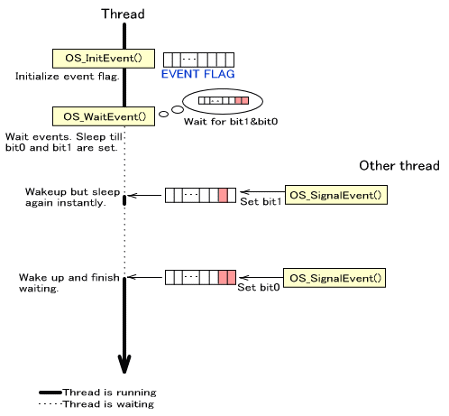

The first method for synchronizing threads is to control them using events.
Events consist of information provided to an event structure. By calling functions available in the SDK, an event can be generated to signal moribund threads that are waiting for an event. If a waiting thread fulfills the specified conditions, its state can be changed from waiting to runnable.

The event structure's data is of type OSEvent, and has the following members:
| Member Name | Type | Usage |
|---|---|---|
flag |
u32 |
Event flag. Stores the flag of the given event. |
queue |
OSThreadQueue |
Thread queue. Used to pause (put in the waiting state) or start threads. |
Before making a thread wait for an event, the structure must be initialized.
The initialization function is OS_InitEvent.
OS_InitEvent( &event );
To wait for an event, you must take an event structure that has been initialized with the OS_InitEvent function and pass it to the OS_WaitEvent function.
To specify the completion conditions when waiting for an event, use the arguments of the OS_WaitEvent function. These are specified as a bit pattern (pattern) and a mode (mode). Depending on the mode, waiting will complete when either (1) all bits in the event flag's bit pattern become 1, or (2) any of the bits in the event flag's bit pattern become 1.
| Value of mode | Completion Conditions |
|---|---|
OS_EVENT_MODE_AND |
Stop waiting when all bits become 1 |
OS_EVENT_MODE_OR |
Stop waiting when any bits become 1 |
Until the specified condition is fulfilled, threads for which this function has been called will be in the waiting state. Strictly speaking, there will be a short time required to find out whether the condition has been fulfilled, but the thread will enter the waiting state immediately if the condition has not been fulfilled. In other words, calling this function may cause execution to switch to a separate thread.
Use the OS_WaitEventEx function if you want to clear the event flag once the condition is fulfilled.
The return value will be the value of the event flag when the condition is fulfilled. If you have specified that the event flag should be cleared with the OS_WaitEventEx function, the flag value before the clear operation will be returned.
OS_WaitEvent( &event, pattern, mode );
OS_WaitEventEx( &event, pattern, mode, clearBit );
If the completion conditions have already been fulfilled, control will return immediately without a thread function being called.
Call the OS_SignalEvent function to set an event flag and signal a waiting thread.
OS_SignalEvent( &event, setBit );
Internally, after setting the event, this function will use the thread queue within the event structure to reschedule.Calling this function may cause execution to switch to a separate thread.
Call the OS_ClearEvent function to clear a particular bit in the event structure's event flag. To clear all bits, call the OS_ClearAllEvent function.
OS_ClearEvent( &event, clearBit );
OS_ClearAllEvent( &event )
Control will not switch to another thread as a result of this function.
The standard procedure for waiting for events is to use the OS_WaitEvent thread function, but it is also possible to poll the OS_PollEvent function to determine whether the conditions are fulfilled on your own.
OS_PollEvent( &event, pattern, mode );
OS_PollEventEx( &event, pattern, mode, clearBit );
Here, the completion conditions for waiting are the same as those for the OS_WaitEvent* functions.
If the return value is nonzero, the conditions will be deemed to have been fulfilled, and that return value will be the value of the event flag. If the return value is 0, the conditions are not fulfilled.
Like the OS_WaitEventEx function, the OS_PollEventEx function allows you to clear specified bits using a clear flag when the conditions have been fulfilled.
Here, let's consider the case where we have three threads: a thread waiting for events, thread 1, and thread 2. In this example, the thread waiting for events is waiting for MY_EVENT1 (thread 1) and MY_EVENT2 (thread 2) to be signaled. It will continue waiting until both are signaled.
OSEvent event;
#define MY_EVENT1 0x00000001
#define MY_EVENT2 0x00000002
#define MY_EVENT (MY_EVENT1 | MY_EVENT2)
//-------- thread waiting on events
func()
{
OS_InitEvent( &event );
:
(void)OS_WaitEvent( &event, MY_EVENT, OS_EVENT_MODE_AND );
OS_Printf( "signaled EVENT1 and EVENT2\n" );
:
}
//-------- thread 1
thread1()
{
:
OS_SignalEvent( &event, MY_EVENT1 );
:
}
//-------- thread 2
thread2()
{
:
OS_SignalEvent( &event, MY_EVENT2 );
:
}
In the example above, the waiting thread waited until both MY_EVENT1 and MY_EVENT2 were signaled. Only one change, shown below, is necessary to change this so that it will wait only until either one is signaled.
//Part offunc()in the example above has been changed.
(void)OS_WaitEvent( &event, MY_EVENT, OS_EVENT_MODE_OR );
OS_Printf( "signaled EVENT1 or EVENT2\n" );
In this example we have two threads: a thread waiting for events, and thread 1, which signals MY_EVENT1 periodically. The thread waiting for events will start up each time MY_EVENT1 is signaled. Once its processing completes, it will go back to waiting for events and enter the moribund state.
OSEvent event;
#define MY_EVENT1 0x00000001
//-------- this thread waits for an event
func()
{
OS_InitEvent( &event );
:
while(1)
{
(void)OS_WaitEventEx( &event, MY_EVENT1,
OS_EVENT_MODE_AND,
MY_EVENT1);
OS_Printf( "signaled EVENT1\n" );
}
:
}
//-------- Thread 1
thread1()
{
:
OS_SignalEvent( &event, MY_EVENT1 );
:
OS_SignalEvent( &event, MY_EVENT1 );
:
}
In this example, we use the OS_WaitEventEx function to clear MY_EVENT1 when the event completes. This is done in order to accept events again.
If this code is changed so that the waiting thread waits for events with the OS_WaitEvent function and clears flag by itself after completion, and an interrupt occurs after the OS_WaitEvent function completes but before flag is cleared, it will not be possible to catch the next single time MY_EVENT1 is signaled. (This is not a problem if interrupts are prohibited for the duration of this sequence, but that would be no different from using the OS_WaitEventEx function.)
// By changing func() as shown below, some events may be dropped.
func()
{
OS_InitEvent( &event );
:
while(1)
{
(void)OS_WaitEvent( &event, MY_EVENT1,
OS_EVENT_MODE_AND );
// When the event occurs here
// Immediately cleared on the line below
event->flag = 0;
OS_Printf( "signaled EVENT1\n" );
}
:
}
OS_InitEvent
OS_WaitEvent*
OS_SignalEvent
OS_Clear*Event
OS_PollEvent*
2007/12/04 Initial version.
CONFIDENTIAL